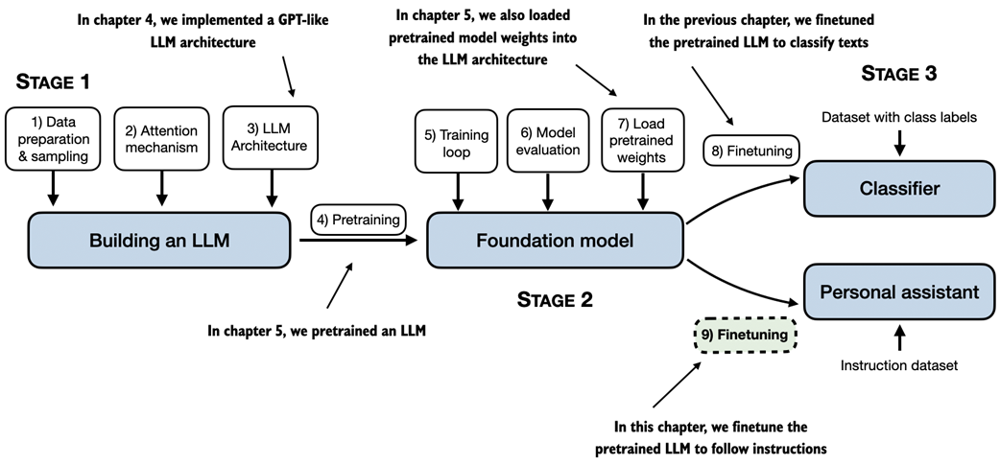
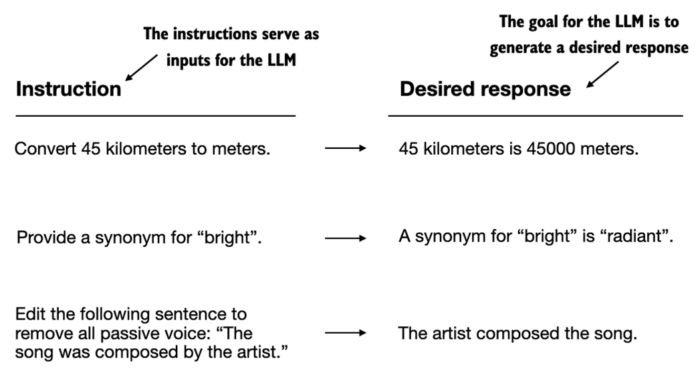
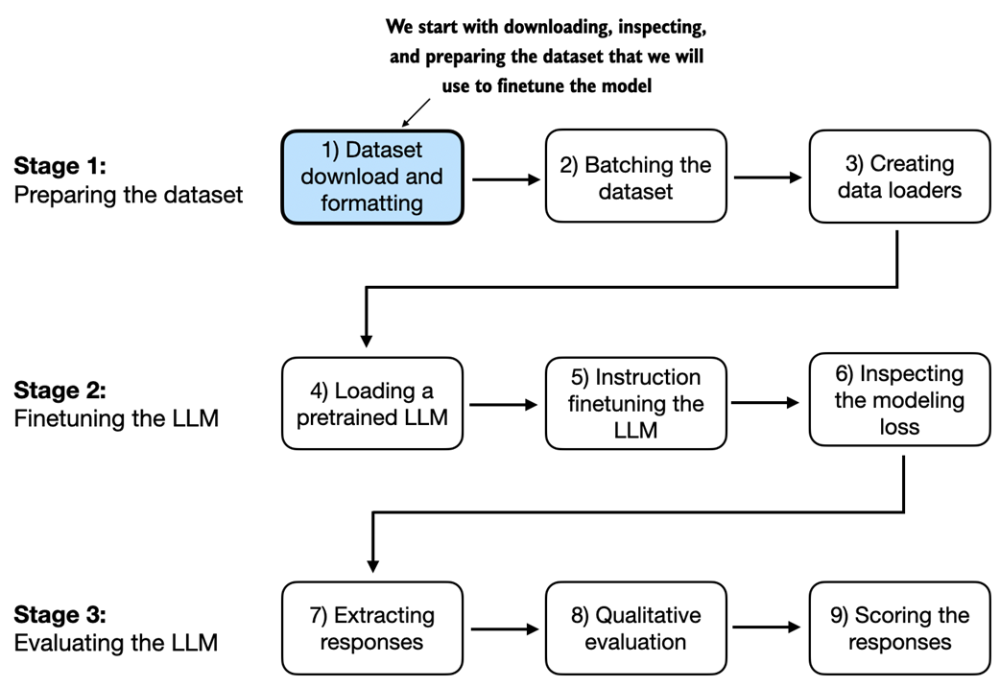
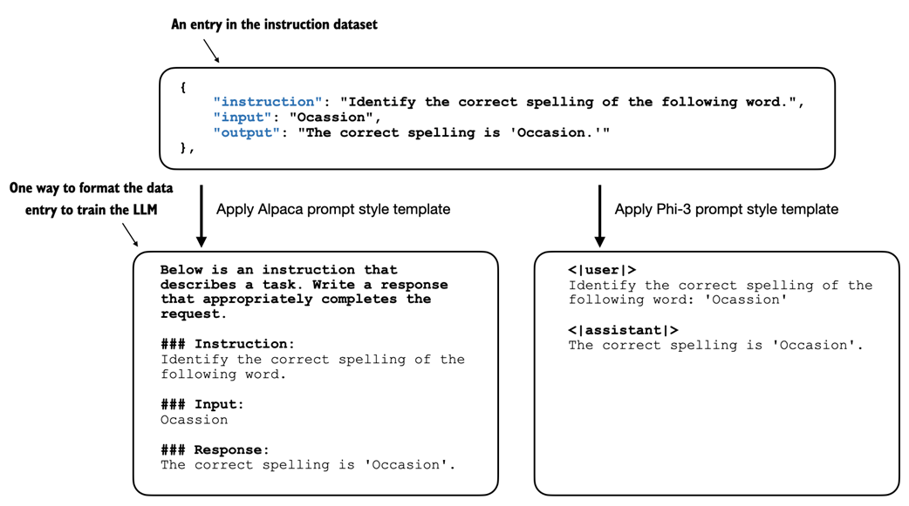
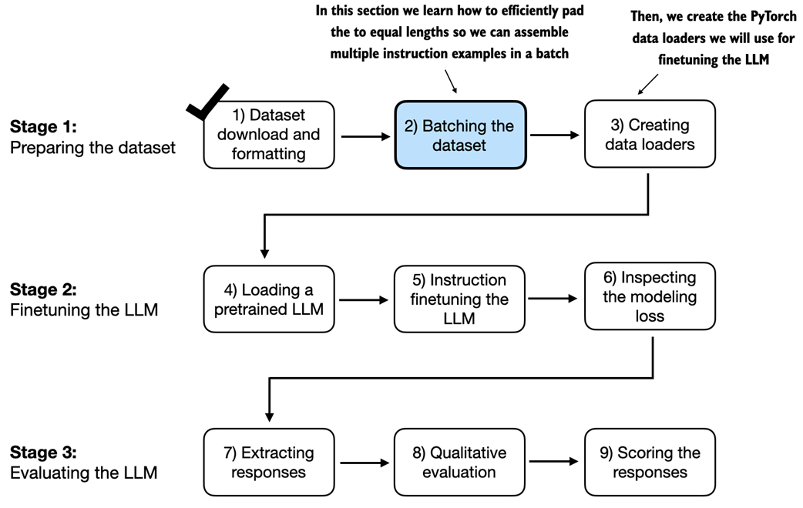
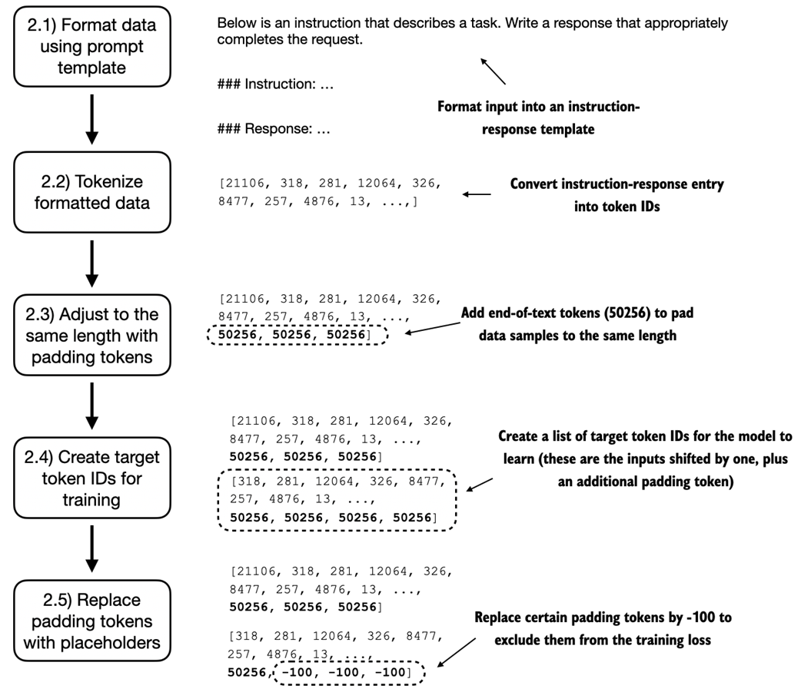
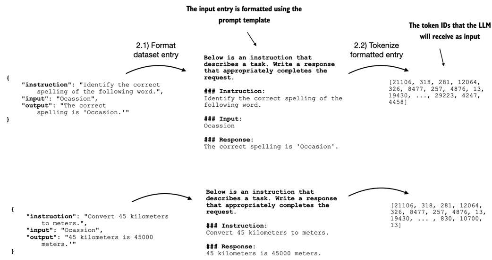
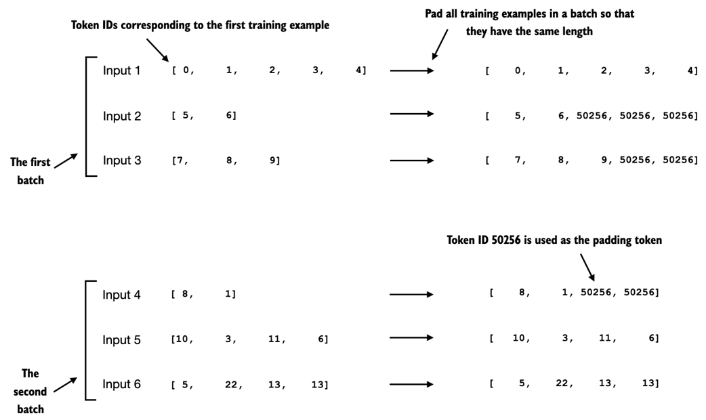

Overview p. 204
- Previously: implemented LLM architecture, carried out pretraining, imported pretrained weights
- Chapter 6: fine-tuned the LLM for classification (spam vs. non-spam)
- This chapter: fine-tune the LLM to follow human instructions
- Instruction fine-tuning is the key technique behind chatbots, personal assistants, and conversational AI
Figure 7.1 -- Three Main Stages of Coding an LLM p. 205

From the book (Raschka, 2025)This chapter focuses on step 9 of stage 3: fine-tuning a pretrained LLM to follow human instructions using an instruction dataset to create a personal assistant.
7.1 Introduction to Instruction Fine-Tuning p. 205
- Pretraining teaches an LLM to generate one word at a time -- resulting in text completion capability
- Pretrained LLMs often struggle with specific instructions (e.g., "Fix the grammar" or "Convert to passive voice")
- Instruction fine-tuning (supervised instruction fine-tuning) improves the LLM's ability to follow instructions and generate desired responses
Figure 7.2 -- Instruction-Response Examples p. 206

From the book (Raschka, 2025)
Instruction: "Convert 45 kilometers to meters." → Response: "45 kilometers is 45000 meters."
Instruction: "Provide a synonym for 'bright.'" → Response: "A synonym for 'bright' is 'radiant.'"
Instruction: "Edit the following sentence to remove all passive voice..." → Response: "The artist composed the song."
Instruction: "Provide a synonym for 'bright.'" → Response: "A synonym for 'bright' is 'radiant.'"
Instruction: "Edit the following sentence to remove all passive voice..." → Response: "The artist composed the song."
Figure 7.3 -- Three-Stage Process for Instruction Fine-Tuning p. 206

From the book (Raschka, 2025)7.2 Preparing a Dataset for Supervised Instruction Fine-Tuning p. 207
Downloading the Dataset
- Dataset: 1,100 instruction-response pairs in JSON format (204 KB)
- Each entry has keys:
instruction,input,output - The
inputfield may occasionally be empty
Listing 7.1 -- Downloading the dataset
import json, os, urllib.request
def download_and_load_file(file_path, url):
if not os.path.exists(file_path):
with urllib.request.urlopen(url) as response:
text_data = response.read().decode("utf-8")
with open(file_path, "w", encoding="utf-8") as file:
file.write(text_data)
else:
with open(file_path, "r", encoding="utf-8") as file:
text_data = file.read()
with open(file_path, "r") as file:
data = json.load(file)
return data
file_path = "instruction-data.json"
url = ("https://raw.githubusercontent.com/rasbt/LLMs-from-scratch"
"/main/ch07/01_main-chapter-code/instruction-data.json")
data = download_and_load_file(file_path, url)
print("Number of entries:", len(data)) # 1100
Prompt Styles
Figure 7.4 -- Prompt Style Comparison p. 208

From the book (Raschka, 2025)
Alpaca style: Structured format with
Phi-3 style: Simpler format using
This chapter uses the Alpaca prompt style.
### Instruction:, ### Input:, ### Response: sections.Phi-3 style: Simpler format using
<|user|> and <|assistant|> tokens.This chapter uses the Alpaca prompt style.
Listing 7.2 -- Implementing the prompt formatting function
def format_input(entry):
instruction_text = (
f"Below is an instruction that describes a task. "
f"Write a response that appropriately completes the request."
f"\n\n### Instruction:\n{entry['instruction']}"
)
input_text = (
f"\n\n### Input:\n{entry['input']}" if entry["input"] else ""
)
return instruction_text + input_text
Partitioning the Dataset
Listing 7.3 -- Partitioning the dataset
train_portion = int(len(data) * 0.85) # 935 entries test_portion = int(len(data) * 0.1) # 110 entries val_portion = len(data) - train_portion - test_portion # 55 entries
7.3 Organizing Data into Training Batches p. 211
The 5-Step Batching Process
Figure 7.6 -- Five Substeps of the Batching Process p. 212

From the book (Raschka, 2025)Custom Collate Function
Listing 7.5 -- Implementing a custom batch collate function
def custom_collate_fn(
batch, pad_token_id=50256, ignore_index=-100,
allowed_max_length=None, device="cpu"
):
batch_max_length = max(len(item)+1 for item in batch)
inputs_lst, targets_lst = [], []
for item in batch:
new_item = item.copy()
new_item += [pad_token_id]
padded = new_item + [pad_token_id] * (batch_max_length - len(new_item))
inputs = torch.tensor(padded[:-1])
targets = torch.tensor(padded[1:])
mask = targets == pad_token_id
indices = torch.nonzero(mask).squeeze()
if indices.numel() > 1:
targets[indices[1:]] = ignore_index
if allowed_max_length is not None:
inputs = inputs[:allowed_max_length]
targets = targets[:allowed_max_length]
inputs_lst.append(inputs)
targets_lst.append(targets)
inputs_tensor = torch.stack(inputs_lst).to(device)
targets_tensor = torch.stack(targets_lst).to(device)
return inputs_tensor, targets_tensor
Why -100? PyTorch's cross_entropy loss function has a default
ignore_index=-100, meaning it ignores targets labeled with -100. We use this to exclude padding tokens from the loss computation. We keep one 50256 token in targets so the LLM learns when to stop generating.
Instruction Masking (Optional)
Figure 7.13 -- Instruction Masking p. 222

From the book (Raschka, 2025)
Left: Full formatted input text tokenized and fed to the LLM.
Right: Target text with instruction tokens replaced by -100 (masked out), keeping only response tokens.
Research is divided on whether masking helps. Shi et al. (2024) found that not masking instructions benefits performance. This chapter does not apply masking.
Right: Target text with instruction tokens replaced by -100 (masked out), keeping only response tokens.
Research is divided on whether masking helps. Shi et al. (2024) found that not masking instructions benefits performance. This chapter does not apply masking.
7.4 Creating Data Loaders for an Instruction Dataset p. 223
- Plug InstructionDataset objects and custom_collate_fn into PyTorch DataLoaders
- Device options:
"cpu","cuda", or"mps"(Apple Silicon) - Use
functools.partialto create a customized collate function withallowed_max_length=1024
Listing 7.6 -- Initializing the data loaders
from torch.utils.data import DataLoader
from functools import partial
customized_collate_fn = partial(
custom_collate_fn, device=device, allowed_max_length=1024
)
num_workers = 0; batch_size = 8
torch.manual_seed(123)
train_dataset = InstructionDataset(train_data, tokenizer)
train_loader = DataLoader(train_dataset, batch_size=batch_size,
collate_fn=customized_collate_fn, shuffle=True, drop_last=True,
num_workers=num_workers)
val_dataset = InstructionDataset(val_data, tokenizer)
val_loader = DataLoader(val_dataset, batch_size=batch_size,
collate_fn=customized_collate_fn, shuffle=False, drop_last=False,
num_workers=num_workers)
test_dataset = InstructionDataset(test_data, tokenizer)
test_loader = DataLoader(test_dataset, batch_size=batch_size,
collate_fn=customized_collate_fn, shuffle=False, drop_last=False,
num_workers=num_workers)
Note: Batch dimensions vary -- e.g., torch.Size([8, 61]), torch.Size([8, 76]) -- because different batches have different sequence lengths thanks to the custom collate function.
7.5 Loading a Pretrained LLM p. 226
- Load the GPT-2 medium (355M parameters) instead of the small (124M) model
- 124M model is too limited in capacity for high-quality instruction fine-tuning
- Model download: approximately 1.42 GB
Listing 7.7 -- Loading the pretrained model
from gpt_download import download_and_load_gpt2
from chapter04 import GPTModel
from chapter05 import load_weights_into_gpt
BASE_CONFIG = {
"vocab_size": 50257, "context_length": 1024,
"drop_rate": 0.0, "qkv_bias": True
}
CHOOSE_MODEL = "gpt2-medium (355M)"
BASE_CONFIG.update(model_configs[CHOOSE_MODEL])
settings, params = download_and_load_gpt2(model_size="355M", models_dir="gpt2")
model = GPTModel(BASE_CONFIG)
load_weights_into_gpt(model, params)
model.eval()
Before fine-tuning: The pretrained model simply repeats the input sentence and instruction text when asked to convert active to passive voice -- demonstrating it cannot follow instructions yet.
7.6 Fine-Tuning the LLM on Instruction Data p. 229
- Reuse
calc_loss_loaderandtrain_model_simplefrom chapter 5 - Initial training loss: 3.83; Initial validation loss: 3.76
- Optimizer: AdamW with lr=0.00005, weight_decay=0.1
- Training: 2 epochs
Hardware Run Times (Two Epochs) p. 231
| Model | Device | Run Time |
|---|---|---|
| gpt2-medium (355M) | CPU (M3 MacBook Air) | 15.78 min |
| gpt2-medium (355M) | GPU (NVIDIA L4) | 1.83 min |
| gpt2-medium (355M) | GPU (NVIDIA A100) | 0.86 min |
| gpt2-small (124M) | CPU (M3 MacBook Air) | 5.74 min |
| gpt2-small (124M) | GPU (NVIDIA L4) | 0.69 min |
| gpt2-small (124M) | GPU (NVIDIA A100) | 0.39 min |
Listing 7.8 -- Instruction fine-tuning the pretrained LLM
import time
start_time = time.time()
torch.manual_seed(123)
optimizer = torch.optim.AdamW(
model.parameters(), lr=0.00005, weight_decay=0.1
)
num_epochs = 2
train_losses, val_losses, tokens_seen = train_model_simple(
model, train_loader, val_loader, optimizer, device,
num_epochs=num_epochs, eval_freq=5, eval_iter=5,
start_context=format_input(val_data[0]), tokenizer=tokenizer
)
Figure 7.17 -- Training and Validation Loss p. 233

From the book (Raschka, 2025)
Both training and validation losses show a sharp initial decrease followed by gradual stabilization over 2 epochs. The model successfully learns to convert "The chef cooks the meal every day." to "The meal is cooked every day by the chef."
7.7 Extracting and Saving Responses p. 233
- Extract model-generated responses for each input in the test dataset
- Use the
generatefunction withmax_new_tokens=256 - Save responses to
instruction-data-with-response.json - Save model as
gpt2-medium355M-sft.pth
Sample Test Set Outputs
Test Set Response Comparison p. 235
| Instruction | Expected | Model Response |
|---|---|---|
| Rewrite using a simile | ...as fast as lightning | ...as fast as a bullet |
| Cloud type for thunderstorms? | cumulonimbus | cumulus cloud |
| Author of Pride and Prejudice | Jane Austen | ...is Jane Austen |
Listing 7.9 -- Generating test set responses
from tqdm import tqdm
for i, entry in tqdm(enumerate(test_data), total=len(test_data)):
input_text = format_input(entry)
token_ids = generate(model=model,
idx=text_to_token_ids(input_text, tokenizer).to(device),
max_new_tokens=256,
context_size=BASE_CONFIG["context_length"], eos_id=50256)
generated_text = token_ids_to_text(token_ids, tokenizer)
response_text = (generated_text[len(input_text):]
.replace("### Response:", "").strip())
test_data[i]["model_response"] = response_text
with open("instruction-data-with-response.json", "w") as file:
json.dump(test_data, file, indent=4)
7.8 Evaluating the Fine-Tuned LLM p. 238
Using Ollama and Llama 3
- Use the 8-billion-parameter Llama 3 model via Ollama (https://ollama.com) for automated evaluation
- Ollama wraps llama.cpp (pure C/C++ LLM implementation) for efficient inference
- Alternative models: phi3 (3.8B, ~8GB RAM), llama3:70b (70B, heavy resources)
Figure 7.19 -- Evaluation Pipeline p. 239

From the book (Raschka, 2025)The evaluation pipeline: generate responses with the fine-tuned model, then score each response using Llama 3 via Ollama on a 0-100 scale.
Listing 7.10 -- Querying a local Ollama model
def query_model(prompt, model="llama3",
url="http://localhost:11434/api/chat"):
data = {"model": model,
"messages": [{"role": "user", "content": prompt}],
"options": {"seed": 123, "temperature": 0, "num_ctx": 2048}}
payload = json.dumps(data).encode("utf-8")
request = urllib.request.Request(url, data=payload, method="POST")
request.add_header("Content-Type", "application/json")
response_data = ""
with urllib.request.urlopen(request) as response:
while True:
line = response.readline().decode("utf-8")
if not line: break
response_json = json.loads(line)
response_data += response_json["message"]["content"]
return response_data
Scoring Results
Example Scores from Llama 3 p. 244
| Task | Expected | Model Response | Score |
|---|---|---|---|
| Simile rewriting | ...as fast as lightning | ...as fast as a bullet | 85/100 |
| Thunderstorm cloud | cumulonimbus | cumulus cloud | 40/100 |
| Author identification | Jane Austen | ...is Jane Austen | 95/100 |
Listing 7.11 -- Evaluating the instruction fine-tuning LLM
def generate_model_scores(json_data, json_key, model="llama3"):
scores = []
for entry in tqdm(json_data, desc="Scoring entries"):
prompt = (f"Given the input `{format_input(entry)}` "
f"and correct output `{entry['output']}`, "
f"score the model response `{entry[json_key]}`"
f" on a scale from 0 to 100, where 100 is the best score. "
f"Respond with the integer number only.")
score = query_model(prompt, model)
try: scores.append(int(score))
except ValueError: continue
return scores
scores = generate_model_scores(test_data, "model_response")
# Average score: 50.32
Performance Reference:
Llama 3 8B base (no fine-tuning): avg score 58.51
Llama 3 8B Instruct (general instruction fine-tuned): avg score 82.6
Our fine-tuned GPT-2 355M: avg score 50.32
Llama 3 8B base (no fine-tuning): avg score 58.51
Llama 3 8B Instruct (general instruction fine-tuned): avg score 82.6
Our fine-tuned GPT-2 355M: avg score 50.32
7.9 Conclusions p. 247
- This chapter concludes the journey through the LLM development cycle
- Covered: implementing architecture, pretraining, and fine-tuning for specific tasks
- Next step (optional): Preference fine-tuning (DPO) for better user alignment
- Staying current: arXiv, r/LocalLLaMA, author's blog
- Production tools: Axolotl, LitGPT
Exercise 7.4: Parameter-efficient fine-tuning with LoRA -- modify the code to use the low-rank adaptation method from appendix E and compare training run time and model performance.
Chapter Summary
- The instruction-fine-tuning process adapts a pretrained LLM to follow human instructions and generate desired responses
- Dataset preparation: download 1,100 instruction-response pairs, format using Alpaca template, split into train (935) / validation (55) / test (110)
- Training batches use a custom collate function that pads sequences, creates target token IDs (shifted by 1), and masks padding tokens with -100
- Load GPT-2 medium (355M parameters) as the starting point for instruction fine-tuning
- Fine-tune using AdamW (lr=5e-5, weight_decay=0.1) for 2 epochs -- losses decrease sharply then stabilize
- Evaluation: extract responses on test set, then score using Llama 3 (8B) via Ollama -- average score: 50.32/100
- The Ollama application enables automated scoring of LLM responses without extensive human evaluation